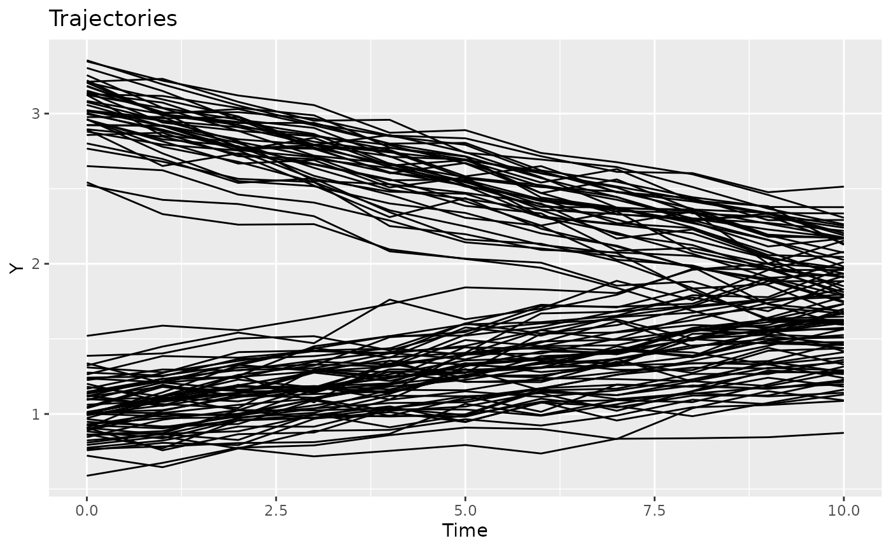
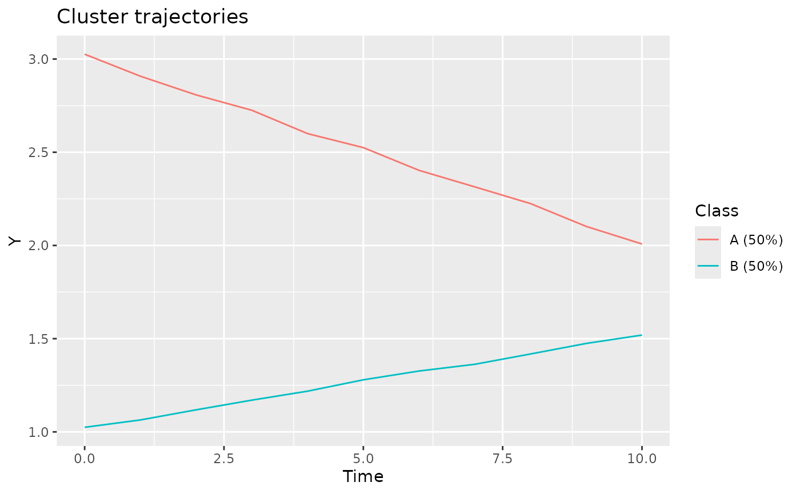
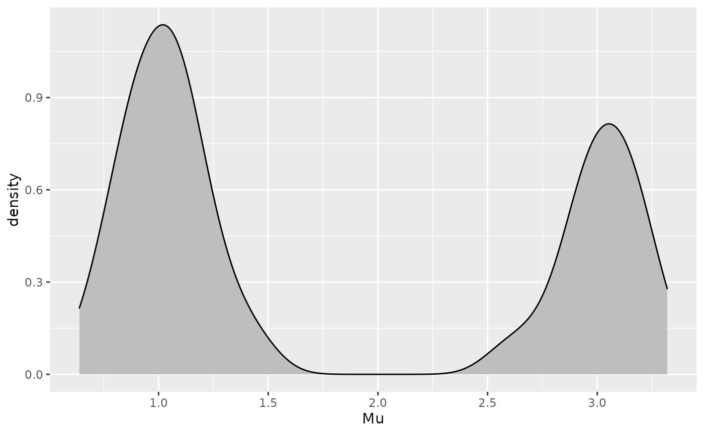
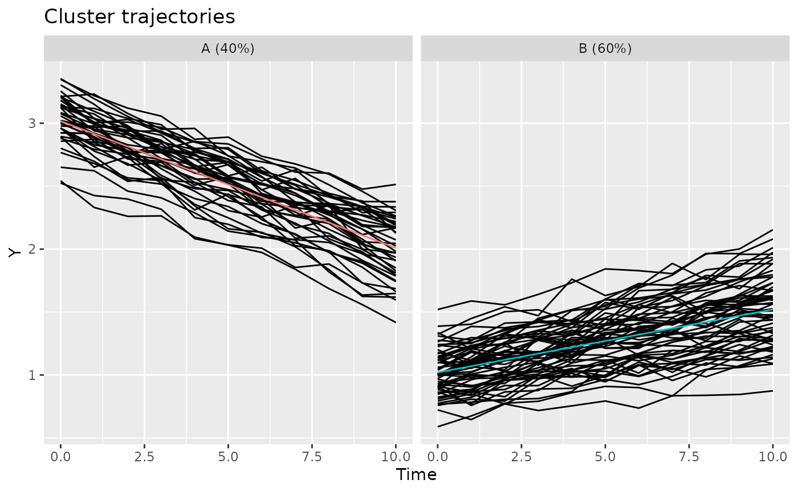

In this vignette we demonstrate how to define new methods.
We will generate a dataset comprising two clusters with a different intercept and slope. Firstly, we configure the default id, time, and response variable, so that these do not need to be provided to the other function calls.
library(latrend)
library(data.table)
options(
latrend.id = "Traj",
latrend.time = "Time",
latrend.verbose = TRUE
)Next, we generate the dataset, with 40 trajectories for cluster A and 60 trajectories for cluster B. Cluster A involves trajectories with a downward slope, whereas cluster B has an upward slope. We define a fixed mean of 1, such that all the cluster trajectories are shifted, placing cluster A at intercept 2, and cluster B at intercept 1.
set.seed(1)
casedata <- generateLongData(
sizes = c(40, 60),
data = data.frame(Time = 0:10),
fixed = Y ~ 1,
fixedCoefs = 1,
cluster = ~ Time,
clusterCoefs = cbind(c(2, -.1), c(0, .05)),
random = ~ Time,
randomScales = cbind(c(.2, .02), c(.2, .02)),
noiseScales = .05
) %>%
as.data.table()We plot the data to get a sense of different trajectories that have been generated. Visually, there is little group separation.
plotTrajectories(casedata, response = "Y")
Since we generated the data, we have the luxury of looking at reference cluster trajectories, as stored in the Mu.cluster column. Note that Mu.fixed must be added to obtain the correct values.
plotClusterTrajectories(casedata, response = "Y", cluster = "Class")
Rather than starting with clustering, in some case studies there may be prior knowledge on how to sensibly stratify the trajectories. Either by an observed independent variable (e.g., age or gender), or a certain aspect of the observed trajectory (e.g., the intercept, slope, variability).
Let’s presume in this example that domain knowledge suggests that stratifying by the intercept may provide a sensible grouping of the trajectories. This approach is further supported by the density plot of the trajectory intercepts, which shows a bimodal distribution.
ggplot(casedata[Time == 0], aes(x = Mu)) +
geom_density(fill = "gray", adjust = .3)
Based on the density plot, we will assign trajectories with an intercept above 1.6 to cluster A, and the remainder to cluster B.
method <- lcMethodStratify(response = "Y", Y[1] > 1.6)
model <- latrend(method, casedata)
clusterProportions(model)
#> A B
#> 0.6 0.4The approach we specified requires the first observation to be available, and is sensitive to noise. A more robust alternative would be to fit a linear model per trajectory, and to use the estimated intercept to stratify the trajectories on.
We can specify this stratification model by defining a function which takes the data of separate trajectories as input. This function should return a single cluster assignment for the respective trajectory. By returning a factor, we can pre-specify the cluster names.
stratfun <- function(data) {
int <- coef(lm(Y ~ Time, data))[1]
factor(int > 1.7,
levels = c(FALSE, TRUE),
labels = c("Low", "High"))
}
m2 <- lcMethodStratify(response = "Y", stratify = stratfun, center = mean)
model2 <- latrend(m2, casedata)
clusterProportions(model2)
#> Low High
#> 0.6 0.4In case the linear regression step is time-intensive, a more efficient approach is to save the pre-computed trajectory intercepts as a column in the original data. This column can then be referred to in the expression of the stratification model.
casedata[, Intercept := coef(lm(Y ~ Time, .SD))[1], by = Traj]
m3 <- lcMethodStratify(
response = "Y",
stratify = Intercept[1] > 1.7,
clusterNames = c("Low", "High")
)
model3 <- latrend(m3, casedata)We can take the approach involving the estimation of a linear model per trajectory one step further. Instead of using a pre-defined threshold on the intercept, we use a cluster algorithm on both the intercept and slope to automatically find clusters.
We first define the representation step, which estimates the model coefficients per trajectory, and outputs a matrix with the coefficients per trajectory per row.
repStep <- function(method, data, verbose) {
dt <- as.data.table(data)
coefdata <- dt[, lm(Y ~ Time, .SD) %>% coef() %>% as.list(), keyby = Traj]
coefmat <- subset(coefdata, select = -1) %>% as.matrix()
rownames(coefmat) <- coefdata$Traj
return(coefmat)
}The cluster step takes the coefficient matrix as input. A cross-sectional cluster algorithm can then be applied to the matrix. In this example, we apply \(k\)-means. The cluster step should output a lcModel object.
The lcModelCustom function creates a lcModel object for a given vector of cluster assignments.
clusStep <- function(method, data, repMat, envir, verbose) {
km <- kmeans(repMat, centers = 3)
lcModelCustom(
response = method$response,
method = method,
data = data,
trajectoryAssignments = km$cluster,
clusterTrajectories = method$center,
model = km
)
}We are now ready to create the lcMethodFeature method.
m.twostep <- lcMethodFeature(
response = "Y",
representationStep = repStep,
clusterStep = clusStep
)
model.twostep <- latrend(m.twostep, data = casedata)
summary(model.twostep)
#> Longitudinal cluster model using two-step clustering
#> lcMethodFeature specifying "two-step clustering"
#> standardize: `scale`
#> center: `meanNA`
#> time: "Time"
#> id: "Traj"
#> response: "Y"
#> representationStep:`repStep`
#> clusterStep: `clusStep`
#>
#> Cluster sizes (K=3):
#> A B C
#> 35 (35%) 25 (25%) 40 (40%)
#>
#> Number of obs: 1100, strata (Traj): 100
#>
#> Scaled residuals:
#> Min. 1st Qu. Median Mean 3rd Qu. Max. NA's
#> NA NA NA NaN NA NA 1100The two-step model defined above is hard-coded for a given formula and a fixed number of clusters. In an exploratory setting, it is convenient to define a parameterized method. Here, we change the two functions to take arguments through the lcMethod object in the method variable.
Note that we can introduce new arguments which are not originally part of lcMethodFeature (e.g., nClusters) to enable the specification of the number of clusters in our method.
repStep.gen <- function(method, data, verbose) {
dt <- as.data.table(data)
coefdata <- dt[, lm(method$formula, .SD) %>% coef() %>% as.list(), keyby = c(method$id)]
# exclude the id column
coefmat <- subset(coefdata, select = -1) %>% as.matrix()
rownames(coefmat) <- coefdata[[method$id]]
return(coefmat)
}
clusStep.gen <- function(method, data, repMat, envir, verbose) {
km <- kmeans(repMat, centers = method$nClusters)
lcModelCustom(
response = method$response,
method = method,
data = data,
trajectoryAssignments = km$cluster,
clusterTrajectories = method$center,
model = km
)
}We create a new lcMethodFeature instance with the more generic functions. Defining values for formula and nClusters here makes these arguments values act as default values in a call of latrend.
m.twostepgen <- lcMethodFeature(
response = "Y",
representationStep = repStep.gen,
clusterStep = clusStep.gen
)However, because we omitted the specification of formula and nClusters, these need to be provided in the latrend call.
model.twostepgen <- latrend(m.twostepgen, formula = Y ~ Time, nClusters = 2, casedata)
summary(model.twostepgen)
#> Longitudinal cluster model using two-step clustering
#> lcMethodFeature specifying "two-step clustering"
#> nClusters: 2
#> formula: Y ~ Time
#> standardize: `scale`
#> center: `meanNA`
#> time: "Time"
#> id: "Traj"
#> response: "Y"
#> representationStep:`repStep.gen`
#> clusterStep: `clusStep.gen`
#>
#> Cluster sizes (K=2):
#> A B
#> 40 (40%) 60 (60%)
#>
#> Number of obs: 1100, strata (Traj): 100
#>
#> Scaled residuals:
#> Min. 1st Qu. Median Mean 3rd Qu. Max. NA's
#> NA NA NA NaN NA NA 1100The use of lcMethodStratify and lcMethodFeature enables rapid prototyping. Once the desired model has been identified, it may be worthwhile to implement it as a standalone method in the framework. This way the model can be extended to output more representative cluster trajectories, or to extend the model with predictive capabilities such that it can be validated on external data.
To illustrate this, we will implement a basic group-based trajectory model (GBTM), also known as latent-class growth analysis. We make use of the implementation available in the lcmm package through the lcmm() function, which allows for a relatively concise illustration.
lcMethod classFirstly, we create a new method class named lcMethodSimpleGBTM, which extends the lcMethod class.
setClass("lcMethodSimpleGBTM", contains = "lcMethod")Note that a lcMethod class has a single slot call, which stores all the arguments to the method. The other relevant aspects of a lcMethod implementation are the prepareData() and fit() functions, which are called when passing a lcMethod object to the latrend() function or any other model estimation function.
lcMethodSimpleGBTM <- function(...) {
mc = match.call()
mc$Class = 'lcMethodSimpleGBTM'
do.call(new, as.list(mc))
}
setMethod("getArgumentDefaults", "lcMethodSimpleGBTM", function(object, ...) {
list(
formula = Value ~ Time,
time = getOption("latrend.time"),
id = getOption("latrend.id"),
nClusters = 2,
nwg = FALSE
)
})Next, we override the getName() and getShortName() functions in our method class to ensure that the model is easily distinguishable from other methods in the summary output. While we return a simple constant character sequence, the naming functions could be improved by generating a more detailed description of the model based on the arguments of the method object.
setMethod("getName", "lcMethodSimpleGBTM",
function(object, ...) "simple group-based trajectory model")
setMethod("getShortName", "lcMethodSimpleGBTM", function(object, ...) "sgbtm")Implementing the prepareData() function enables the lcMethod to do data processing or transforming the data or other arguments in a structure which is suitable for the model fitting procedure. The prepare function takes a lcMethod, the data as a data.frame, and the verbosity level as inputs. The processing is passed onto the fit function by returning an environment with the relevant variables.
In this example, we need to ensure that the Id column is an integer.
setMethod("prepareData", "lcMethodSimpleGBTM", function(method, data, verbose, ...) {
envir <- new.env()
envir$data <- as.data.frame(data)
envir$data[[method$id]] <- factor(data[[method$id]]) %>% as.integer()
return(envir)
})The fit() function estimates the model and should return an object that extends the lcModel class. In our implementation, we call the lcmm() with the appropriate arguments, and we construct a lcModelSimpleGBTM instance. The class is defined in the subsection below. The envir argument contains the return value of the prepare() function, which would be NULL here.
setMethod("fit", "lcMethodSimpleGBTM", function(method, data, envir, verbose, ...) {
args <- as.list(method, args = lcmm::lcmm)
args$data <- envir$data
args$fixed <- method$formula
if (method$nClusters > 1) {
args$mixture <- update(method$formula, NULL ~ .)
} else {
args$mixture <- NULL
}
args$subject <- method$id
args$ng <- method$nClusters
args$returndata <- TRUE
model <- do.call(lcmm::lcmm, args)
new(
"lcModelSimpleGBTM",
method = method,
data = data,
model = model,
clusterNames = LETTERS[seq_len(method$nClusters)]
)
})lcModel classWe start off by defining the lcModelSimpleGBTM as an extension of the lcModel class. Extending the base class also enables the addition of new fields to the class, although there is no need for this in the present model.
setClass("lcModelSimpleGBTM", contains = "lcModel")Our model inherits a couple of slots from the lcModel class, namely:
slotNames("lcModelSimpleGBTM")
#> [1] "model" "method" "call" "data"
#> [5] "id" "time" "response" "label"
#> [9] "ids" "times" "clusterNames" "date"
#> [13] "estimationTime" "tag"The "model" slot is free to be used to assign an arbitrary data structure that represents the internal model representation(s). In our implementation, this slot contains the lcmm model. The other slots are assigned in the constructor of the lcModel class, or by the latrend() estimation function. It is best practice to use the relevant getter functions for obtaining these values (via e.g., idVariable(), getLcMethod(), clusterNames()).
Typically, most effort of implementing the model interface goes to the predictForCluster() function. While implementing the function is optional, it is used for obtaining the fitted values, fitted trajectories, residuals, and cluster trajectories. Without this function, there is little functionality from a model except for the partitioning of the fitted trajectories.
The fitted() function returns the fitted values per trajectory per cluster. If the clusters are not provided, the function is expected to return a matrix with the fitted values for each cluster. This logic is handled in the transformFitted() function, which is available in the package.
fitted.lcModelSimpleGBTM <- function(object, clusters = trajectoryAssignments(object)) {
predNames <- paste0("pred_m", 1:nClusters(object))
predMat <- as.matrix(object@model$pred[predNames])
colnames(predMat) <- clusterNames(object)
transformFitted(pred = predMat, model = object, clusters = clusters)
}The easiest way to add predictive capability to a model is by implementing the function predictForCluster(). This function returns the predicted values of a specific cluster, for the respective observations. This function is used by predict.lcModel(model, newdata) function, which also reduces the output of fitted(model) in case of newdata = NULL.
setMethod("predictForCluster", "lcModelSimpleGBTM", function(
object, newdata, cluster, what = 'mu', ...)
{
predMat = lcmm::predictY(object@model, newdata = newdata)$pred %>%
set_colnames(clusterNames(object))
clusIdx = match(cluster, clusterNames(object))
predMat[, clusIdx]
})In order for the model implementation to return cluster assignments through the trajectoryAssignments() function, we need to implement the postprob() function to return the posterior probability matrix for the fitted data.
setMethod("postprob", signature("lcModelSimpleGBTM"), function(object) {
as.matrix(object@model$pprob)[, c(-1, -2), drop = FALSE]
})Lastly, we override the converged() function to return the convergence code of the internal model.
m <- lcMethodSimpleGBTM(formula = Y ~ Time)
show(m)
#> lcMethodSimpleGBTM specifying "simple group-based trajectory model"
#> formula: Y ~ Time
#> time: "Time"
#> id: "Traj"
#> nClusters: 2
#> nwg: FALSE
sgbtm <- latrend(m, casedata)
#> Be patient, lcmm is running ...
#> The program took 0.15 seconds
summary(sgbtm)
#> Longitudinal cluster model using simple group-based trajectory model
#> lcMethodSimpleGBTM specifying "simple group-based trajectory model"
#> formula: Y ~ Time
#> time: "Time"
#> id: "Traj"
#> nClusters: 2
#> nwg: FALSE
#>
#> Cluster sizes (K=2):
#> A B
#> 40 (40%) 60 (60%)
#>
#> Number of obs: 1100, strata (Traj): 100
#>
#> Scaled residuals:
#> Min. 1st Qu. Median Mean 3rd Qu. Max.
#> -2.1126 -0.9295 0.4772 0.0000 0.8352 1.3507
plot(sgbtm)